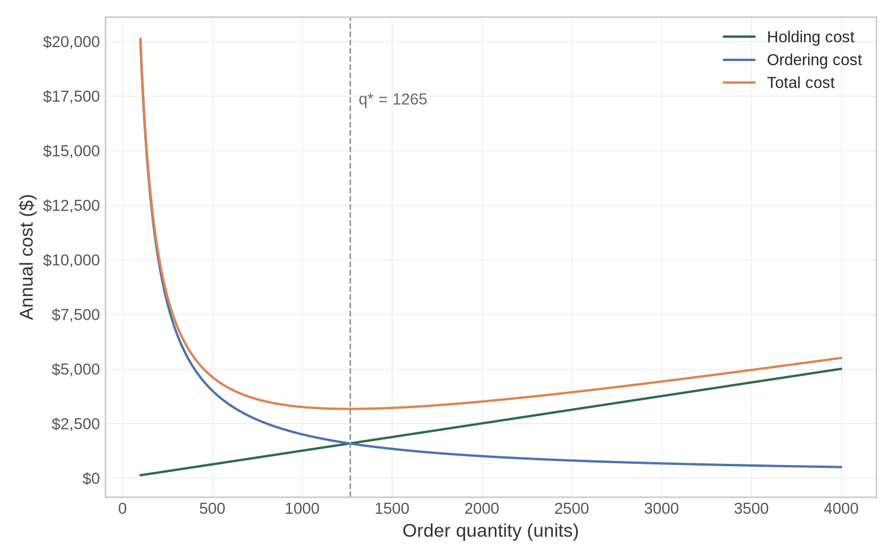
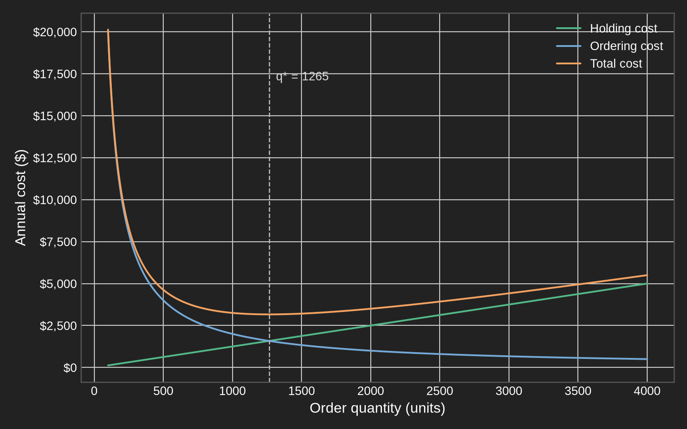
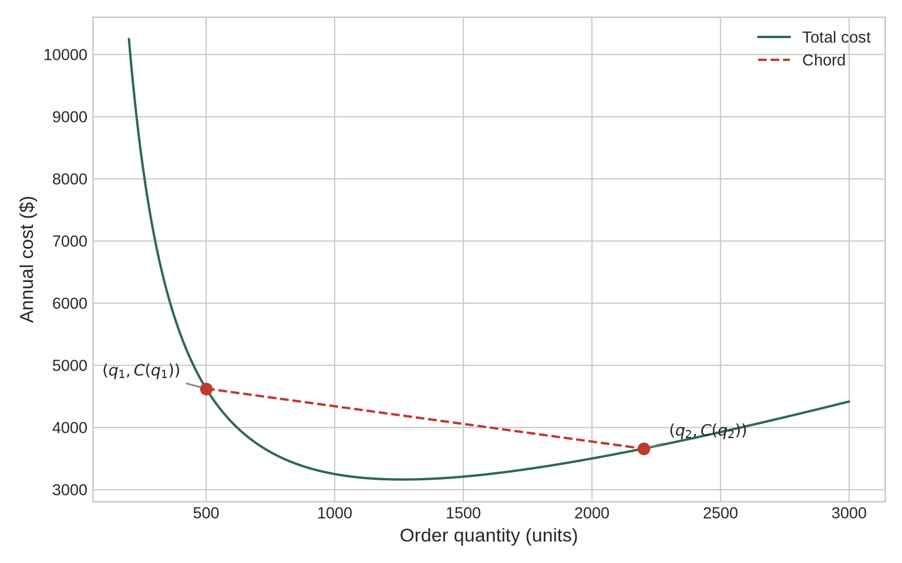
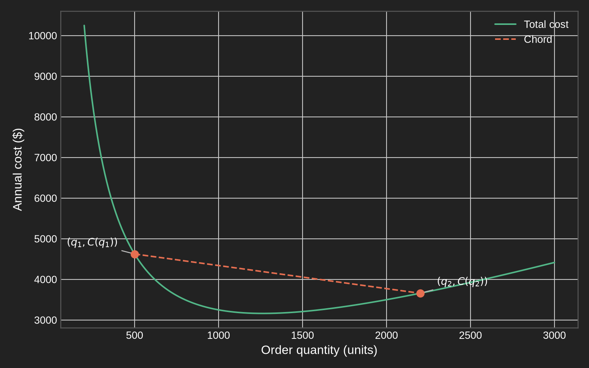
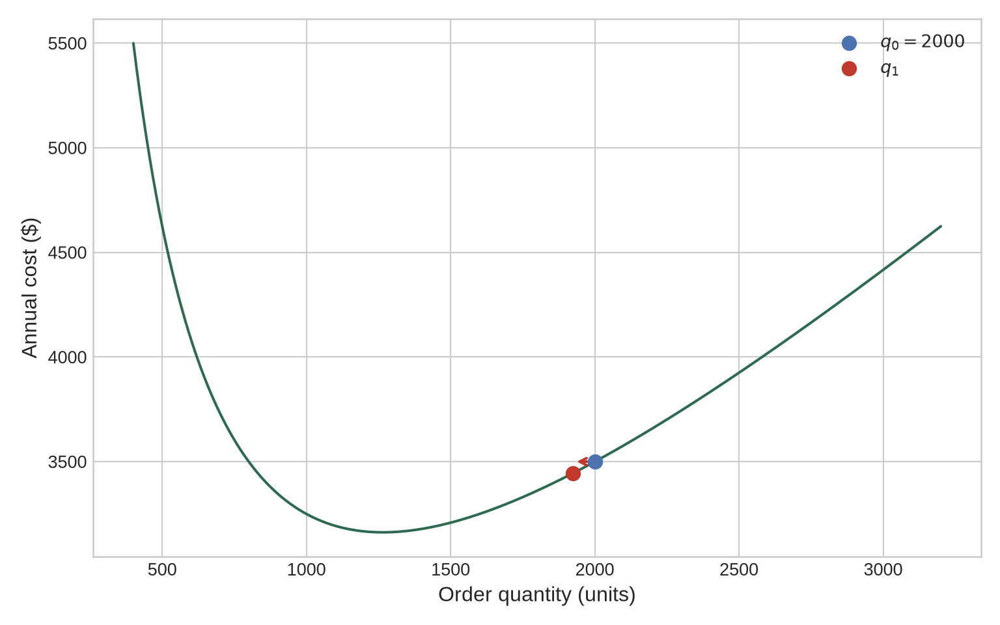
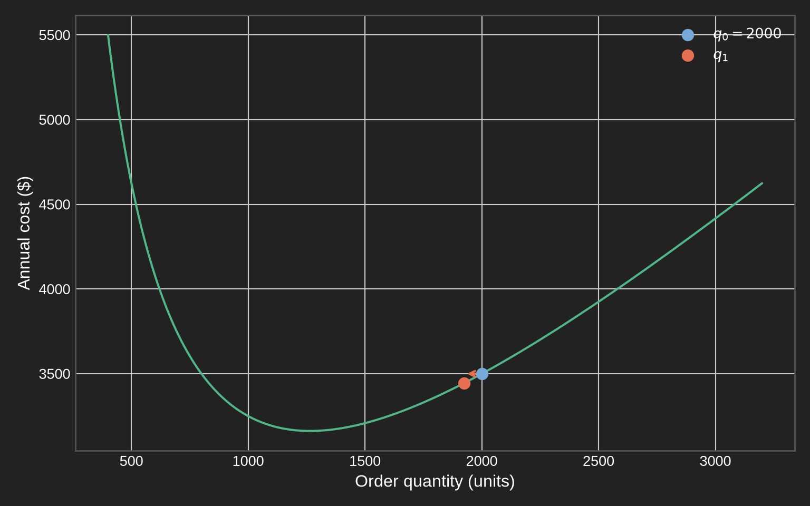

Every warehouse manager knows the feeling. Order too little and you run out of stock mid-week, lose sales, and scramble to reorder at a premium. Order too much and you pay to store inventory nobody needs, watch it depreciate, and tie up capital that could go elsewhere. Somewhere between those two failures is the right number — and finding it does not require guessing.
The total cost of managing inventory has two competing pieces. Holding cost grows with order quantity: the more units you store, the more you spend on warehouse space, insurance, and opportunity cost. Ordering cost goes the other way: the more you order per shipment, the fewer shipments you make and the less you spend on delivery and setup fees.
Let \(q\) denote the order quantity, \(D\) the annual demand, \(h\) the holding cost per unit per year, and \(s\) the fixed cost per order. The classical Economic Order Quantity (EOQ) model combines these into a total annual cost:
\[ C(q) = \frac{hq}{2} + \frac{Ds}{q}, \qquad q > 0. \tag{2.1}\]
The first term increases linearly with \(q\); the second decreases hyperbolically. Their sum produces a U-shaped curve with a single minimum — the kind of structure where calculus is exactly the right tool.
The derivative \(C'(q)\) measures how \(C\) changes when \(q\) changes by an infinitesimal amount. At any point \(q_0\):
\[ C'(q_0) = \lim_{\varepsilon \to 0} \frac{C(q_0 + \varepsilon) - C(q_0)}{\varepsilon}. \]
If \(C'(q_0) > 0\), the cost increases as \(q\) increases — we are to the right of the minimum. If \(C'(q_0) < 0\), it decreases — we are to the left. The derivative encodes both direction and rate of change.
For the EOQ cost:
\[ C'(q) = \frac{h}{2} - \frac{Ds}{q^2}. \]
Think of the derivative at a point as the slope of the tangent line to the curve at that point. A positive slope means “going uphill to the right.” A negative slope means “going downhill to the right.” Zero slope means the tangent is flat — we are at a critical point.
In multiple dimensions, the gradient \(\nabla f\) generalizes the derivative: it is a vector pointing in the direction of steepest ascent. Moving opposite to the gradient — downhill — brings us closer to a minimum.
In several variables, the derivative generalizes to the gradient:
\[ \nabla f(\mathbf{x}) = \left[\frac{\partial f}{\partial x_1},\ \frac{\partial f}{\partial x_2},\ \ldots,\ \frac{\partial f}{\partial x_p}\right]^\top. \]
The gradient at \(\mathbf{x}_0\) points in the direction of steepest ascent of \(f\) from that point. Its magnitude measures how rapidly \(f\) changes in that direction. This geometric picture is the foundation of every first-order optimization method we will encounter in this book.
# EOQ parameters
D <- 10000 # annual demand (units)
h <- 2.5 # holding cost ($/unit/year)
s <- 200 # ordering cost ($/order)
q_vals <- seq(100, 4000, by = 10)
eoq_df <- tibble(
q = q_vals,
holding = h * q / 2,
ordering = D * s / q,
total = holding + ordering
) |>
pivot_longer(
cols = c(holding, ordering, total),
names_to = "component",
values_to = "cost"
) |>
mutate(
component = factor(
component,
levels = c("holding", "ordering", "total"),
labels = c("Holding cost", "Ordering cost", "Total cost")
)
)
# Optimal q*
q_star <- sqrt(2 * D * s / h)
p_base <- ggplot(eoq_df, aes(x = q, y = cost, color = component, linetype = component)) +
geom_line(linewidth = 0.8) +
scale_linetype_manual(
values = c("Holding cost" = "solid", "Ordering cost" = "solid",
"Total cost" = "solid")
) +
labs(
x = "Order quantity (units)",
y = "Annual cost ($)",
color = NULL, linetype = NULL
)
# Reference line + annotation added per render so colours adapt to mode
add_refs <- function(pl, dark = FALSE) {
pl +
geom_vline(xintercept = q_star, linetype = "dashed",
color = lc("ref_line", dark = dark)) +
annotate(
"text", x = q_star + 80, y = max(eoq_df$cost) * 0.85,
label = paste0("q* = ", round(q_star)), hjust = 0, size = 3.5,
color = lc("ref_text", dark = dark)
)
}import numpy as np
import matplotlib.pyplot as plt
import matplotlib.ticker as ticker
# EOQ parameters
D = 10_000 # annual demand (units)
h = 2.5 # holding cost ($/unit/year)
s = 200 # ordering cost ($/order)
q_vals = np.linspace(100, 4000, 500)
holding = h * q_vals / 2
ordering = D * s / q_vals
total = holding + ordering
q_star = np.sqrt(2 * D * s / h)
plt.style.use("seaborn-v0_8-whitegrid")
fig, ax = plt.subplots(figsize=(8, 5))
fig.patch.set_facecolor("#ffffff")
ax.plot(q_vals, holding, label="Holding cost", color="#2D6A4F", lw=1.5)
ax.plot(q_vals, ordering, label="Ordering cost", color="#4C72B0", lw=1.5)
ax.plot(q_vals, total, label="Total cost", color="#DD8452", lw=1.5)
ax.axvline(q_star, color="grey", linestyle="--", lw=1)
ax.text(q_star + 50, total.max() * 0.85,
f"q* = {q_star:.0f}", fontsize=10, color="grey")
ax.set_xlabel("Order quantity (units)", fontsize=12)
ax.set_ylabel("Annual cost ($)", fontsize=12)
ax.yaxis.set_major_formatter(ticker.FuncFormatter(lambda x, _: f"${x:,.0f}"))
ax.legend(frameon=False)
plt.tight_layout()
plt.close()


The U-shape of \(C(q)\) in Figure 2.1 reveals the key idea: at the minimum, the curve has zero slope. The holding cost is rising at exactly the rate the ordering cost is falling. Neither term dominates — they balance.
This balance is not a coincidence. It is a consequence of the first-order optimality condition: at a local minimum \(q^*\) of a differentiable function, the derivative must vanish.
Let \(f : \mathbb{R}^p \to \mathbb{R}\) be differentiable. If \(\mathbf{x}^*\) is a local minimum of \(f\), then
\[ \nabla f(\mathbf{x}^*) = \mathbf{0}. \]
In one dimension: \(f'(x^*) = 0\).
This condition is necessary but not sufficient on its own — a zero gradient identifies a candidate, not a confirmed minimum. A maximum and a saddle point also satisfy \(\nabla f = 0\).
For the EOQ cost, setting \(C'(q) = 0\):
\[ \frac{h}{2} - \frac{Ds}{q^2} = 0 \implies q^* = \sqrt{\frac{2Ds}{h}}. \tag{2.2}\]
With \(D = 10{,}000\), \(s = 200\), and \(h = 2.5\), this gives \(q^* = \sqrt{1{,}600{,}000} = 1{,}265\) units — the vertical line in Figure 2.1.
The condition \(\nabla f(\mathbf{x}^*) = \mathbf{0}\) is necessary for a local minimum — but a zero gradient alone does not confirm that you have found one. The function \(f(x) = x^3\) satisfies \(f'(0) = 0\), yet \(x = 0\) is an inflection point, not a minimum. Always verify second-order conditions or use structural properties (such as convexity) to confirm.
A point where \(\nabla f = \mathbf{0}\) is called a critical point. Three geometric possibilities exist: a minimum, a maximum, or a saddle point. The second derivative determines which.
In one dimension, the second derivative \(f''(x^*)\) measures how quickly the slope is changing at the critical point:
For the EOQ cost, \(C''(q) = 2Ds/q^3 > 0\) for all \(q > 0\). The critical point at \(q^*\) is confirmed as a minimum.
In multiple variables, the second-order information is encoded in the Hessian matrix \(H_f(\mathbf{x})\), whose \((i,j)\)-th entry is the mixed partial derivative:
\[ [H_f(\mathbf{x})]_{i,j} = \frac{\partial^2 f}{\partial x_i\, \partial x_j}. \]
The Hessian plays the role of the second derivative: it captures the curvature of \(f\) in every direction simultaneously.
Let \(\mathbf{x}^*\) satisfy \(\nabla f(\mathbf{x}^*) = \mathbf{0}\).
Positive definiteness of the Hessian is the multivariable generalization of \(f'' > 0\). Checking it amounts to verifying that all eigenvalues of \(H_f(\mathbf{x}^*)\) are positive — or equivalently, that all leading principal minors of \(H_f(\mathbf{x}^*)\) are positive (Sylvester’s criterion).
A quadratic Taylor expansion of \(f\) around a critical point \(\mathbf{x}^*\) gives:
\[ f(\mathbf{x}^* + \mathbf{v}) \approx f(\mathbf{x}^*) + \underbrace{ \nabla f(\mathbf{x}^*)^\top \mathbf{v}}_{=\,0} + \frac{1}{2}\, \mathbf{v}^\top H_f(\mathbf{x}^*) \mathbf{v}. \]
The first-order term vanishes at a critical point. The sign of the remainder depends entirely on \(\mathbf{v}^\top H_f(\mathbf{x}^*) \mathbf{v}\):
The second-order conditions guarantee a local minimum — a point better than its immediate neighbors. For optimization in practice, we usually want a global minimum. And local methods, including gradient descent, can get stuck in local minima if the function has the wrong shape.
Convexity is what prevents this.
A function \(f : \mathbb{R}^p \to \mathbb{R}\) is convex if for any two points \(\mathbf{x}, \mathbf{y}\) and any \(\lambda \in [0, 1]\):
\[ f\!\left(\lambda \mathbf{x} + (1-\lambda)\mathbf{y}\right) \leq \lambda f(\mathbf{x}) + (1-\lambda) f(\mathbf{y}). \tag{2.3}\]
Geometrically: the function lies below or on the chord connecting any two points on its graph.
This definition has a powerful consequence: a convex function has no local minima that are not also global. If you find a point where \(\nabla f = \mathbf{0}\) and \(f\) is convex, you have found the global minimum — there is nothing better anywhere.
A strictly convex function looks like a bowl. Any ball you place inside rolls to the bottom — the unique global minimum. A non-convex function has bumps and valleys; the ball may settle in a local depression without ever reaching the lowest point.
For convex functions, the first-order condition \(\nabla f(\mathbf{x}^*) = \mathbf{0}\) is not just necessary — it is also sufficient for a global minimum.
The EOQ cost \(C(q) = hq/2 + Ds/q\) is convex on \(q > 0\): its second derivative \(C''(q) = 2Ds/q^3\) is strictly positive everywhere on the domain. The critical point at \(q^*\) is therefore the unique global minimum. No other order quantity can do better.
Several equivalent conditions characterize convexity:
Most objectives we will encounter in this book are convex by construction. This is not accidental — the models are designed that way deliberately. Convexity guarantees that any point satisfying the first-order conditions is a global minimum, not merely a local one. There is no risk of a solver finding a bad solution that happens to satisfy \(\nabla f = \mathbf{0}\). When we arrive at the optimization problems in Part III, this property will be the reason we can trust the solutions we compute.
The sum of two convex functions is convex, and a nonnegative scalar multiple of a convex function is convex. These preservation rules allow us to certify convexity for complex objectives by decomposing them into simpler pieces.
D <- 10000; h <- 2.5; s <- 200
q_vals <- seq(200, 3000, by = 5)
cost <- tibble(
q = q_vals,
cost = h * q / 2 + D * s / q
)
# Two demonstration points
q1 <- 500; q2 <- 2200
c1 <- h * q1 / 2 + D * s / q1
c2 <- h * q2 / 2 + D * s / q2
# Chord between the two points
chord <- tibble(q = c(q1, q2), cost = c(c1, c2))
p_base <- ggplot(cost, aes(x = q, y = cost)) +
geom_line(color = lc("green"), linewidth = 1) +
geom_line(data = chord, aes(x = q, y = cost),
color = lc("red"), linewidth = 1, linetype = "dashed") +
geom_point(data = chord, aes(x = q, y = cost),
color = lc("red"), size = 3) +
labs(
x = "Order quantity (units)",
y = "Annual cost ($)"
)
# Point labels added per render so text colour adapts to mode
add_labels <- function(pl, dark = FALSE) {
pl +
annotate("text", x = q1 - 80, y = c1 + 150,
label = "(q₁, C(q₁))", size = 3.5, hjust = 1,
color = lc("ref_text", dark = dark)) +
annotate("text", x = q2 + 80, y = c2 + 150,
label = "(q₂, C(q₂))", size = 3.5, hjust = 0,
color = lc("ref_text", dark = dark))
}import numpy as np
import matplotlib.pyplot as plt
D = 10_000; h = 2.5; s = 200
q_vals = np.linspace(200, 3000, 500)
cost = h * q_vals / 2 + D * s / q_vals
# Two demonstration points
q1, q2 = 500, 2200
c1 = h * q1 / 2 + D * s / q1
c2 = h * q2 / 2 + D * s / q2
plt.style.use("seaborn-v0_8-whitegrid")
fig, ax = plt.subplots(figsize=(8, 5))
fig.patch.set_facecolor("#ffffff")
ax.plot(q_vals, cost, color="#2D6A4F", lw=1.5, label="Total cost")
ax.plot([q1, q2], [c1, c2], color="#C0392B", lw=1.5,
linestyle="--", label="Chord")
ax.scatter([q1, q2], [c1, c2], color="#C0392B", s=50, zorder=5)
ax.annotate(r"$(q_1, C(q_1))$", xy=(q1, c1),
xytext=(q1 - 100, c1 + 200), fontsize=10,
ha="right", arrowprops=dict(arrowstyle="-", color="grey"))
ax.annotate(r"$(q_2, C(q_2))$", xy=(q2, c2),
xytext=(q2 + 100, c2 + 200), fontsize=10,
ha="left", arrowprops=dict(arrowstyle="-", color="grey"))
ax.set_xlabel("Order quantity (units)", fontsize=12)
ax.set_ylabel("Annual cost ($)", fontsize=12)
ax.legend(frameon=False)
plt.tight_layout()
plt.close()



When a closed-form solution to \(\nabla f = \mathbf{0}\) exists — as it does for the EOQ — calculus gives us the answer directly. The derivative equation is solved in closed form, and we are done. But most objective functions encountered in machine learning have no closed-form minimizer. The equation \(\nabla f(\mathbf{x}) = \mathbf{0}\) may be nonlinear or involve thousands of unknowns that must be solved numerically.
Gradient descent is the simplest numerical strategy. Its logic is purely geometric: the gradient \(\nabla f(\mathbf{x})\) points uphill. Moving in the direction \(-\nabla f(\mathbf{x})\) — the negative gradient — takes us downhill.
Starting from an initial point \(\mathbf{x}_0\), one gradient descent step produces:
\[ \mathbf{x}_1 = \mathbf{x}_0 - \eta\, \nabla f(\mathbf{x}_0), \tag{2.4}\]
where \(\eta > 0\) is the step size (also called the learning rate). The step size controls how far we move along the downhill direction.
On the EOQ cost, one step from \(q_0 = 2{,}000\) with \(\eta = 0.05\):
\[ C'(2000) = \frac{2.5}{2} - \frac{10000 \times 200}{2000^2} = 1.25 - 0.5 = 0.75. \]
\[ q_1 = 2000 - 0.05 \times 0.75 = 1999.96. \]
That is a small step — the derivative has units of dollars per unit, and \(\eta\) must be calibrated accordingly. The point is not the arithmetic; it is the direction. The gradient told us we were too far right (positive derivative means we should decrease \(q\)), and the step corrects course.
Gradient descent, as described here, is a geometric idea — not a complete algorithm. The one-step picture in Equation 2.4 captures the logic. Repeated application moves steadily toward the minimum.
What we have not specified: how to choose \(\eta\), when to stop, how to handle noisy or high-dimensional settings. Those details matter enormously in practice and are the subject of Chapter 6, which covers first- and second-order numerical methods in full. The purpose here is only geometric: the gradient tells you where uphill is, and you go the other way.
D <- 10000; h <- 2.5; s <- 200
C <- function(q) h * q / 2 + D * s / q
Cp <- function(q) h / 2 - D * s / q^2
q0 <- 2000
eta <- 100 # step size in units of q (illustrative)
grad <- Cp(q0)
q1 <- q0 - eta * grad
q_vals <- seq(400, 3200, by = 5)
cost_df <- tibble(q = q_vals, cost = C(q_vals))
arrow_df <- tibble(
q = c(q0, q1),
cost = C(c(q0, q1))
)
p_base <- ggplot(cost_df, aes(x = q, y = cost)) +
geom_line(color = lc("green"), linewidth = 1) +
geom_segment(
aes(x = q0, y = C(q0), xend = q1, yend = C(q0)),
arrow = arrow(length = unit(0.25, "cm"), type = "closed"),
color = lc("red"), linewidth = 0.9
) +
geom_point(aes(x = q0, y = C(q0)),
color = lc("blue"), size = 3) +
geom_point(aes(x = q1, y = C(q1)),
color = lc("red"), size = 3) +
labs(x = "Order quantity (units)", y = "Annual cost ($)")
# Step labels added per render so text colour adapts to mode
add_labels <- function(pl, dark = FALSE) {
pl +
annotate("text", x = q0 + 50, y = C(q0) + 60,
label = expression(q[0] == 2000), hjust = 0, size = 3.5,
color = lc("ref_text", dark = dark)) +
annotate("text", x = q1 - 50, y = C(q1) + 60,
label = expression(q[1]), hjust = 1, size = 3.5,
color = lc("ref_text", dark = dark))
}import numpy as np
import matplotlib.pyplot as plt
D = 10_000; h = 2.5; s = 200
C = lambda q: h * q / 2 + D * s / q
Cp = lambda q: h / 2 - D * s / q**2
q0 = 2000
eta = 100
q1 = q0 - eta * Cp(q0)
q_vals = np.linspace(400, 3200, 500)
plt.style.use("seaborn-v0_8-whitegrid")
fig, ax = plt.subplots(figsize=(8, 5))
fig.patch.set_facecolor("#ffffff")
ax.plot(q_vals, C(q_vals), color="#2D6A4F", lw=1.5)
ax.annotate(
"", xy=(q1, C(q0)), xytext=(q0, C(q0)),
arrowprops=dict(arrowstyle="->", color="#C0392B", lw=1.5)
)
ax.scatter([q0], [C(q0)], color="#4C72B0", s=60, zorder=5,
label=r"$q_0 = 2000$")
ax.scatter([q1], [C(q1)], color="#C0392B", s=60, zorder=5,
label=r"$q_1$")
ax.set_xlabel("Order quantity (units)", fontsize=12)
ax.set_ylabel("Annual cost ($)", fontsize=12)
ax.legend(frameon=False)
plt.tight_layout()
plt.close()



Exercise 2.1. A server provisioning problem has the following response time cost:
\[ L(n) = \frac{a}{n} + b \cdot n^2, \qquad n > 0, \]
where \(n\) is the number of allocated servers, \(a > 0\) captures the throughput benefit of more servers, and \(b > 0\) captures the coordination overhead that grows super-linearly.
Exercise 2.2. Let \(f(x, y) = (x - 2)^2 + (y - 3)^2 + xy\).
Exercise 2.3. The gradient descent update \(x_{t+1} = x_t - \eta f'(x_t)\) applied to \(f(x) = x^2\) starting from \(x_0 = 10\):
Exercise 2.4 — Graduate level. Consider a function \(f : \mathbb{R}^p \to \mathbb{R}\) that is differentiable and convex.